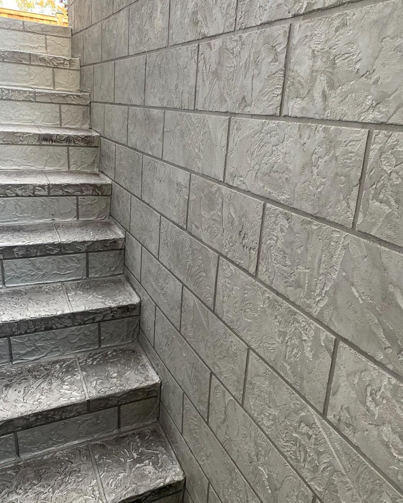
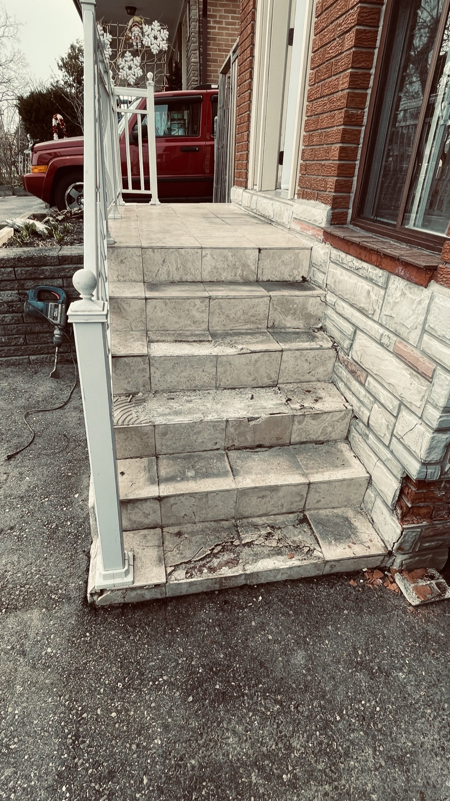
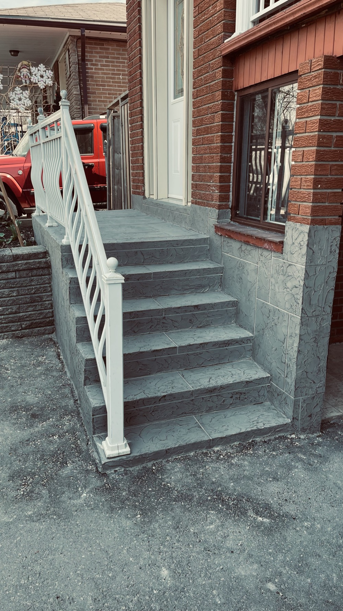
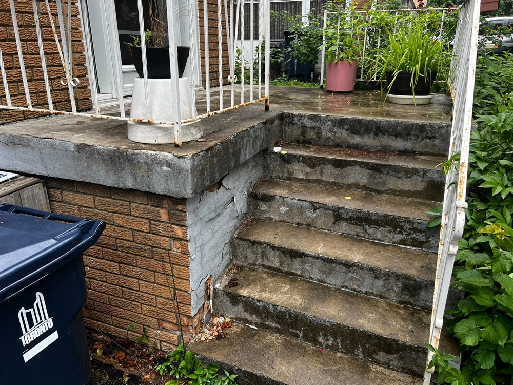
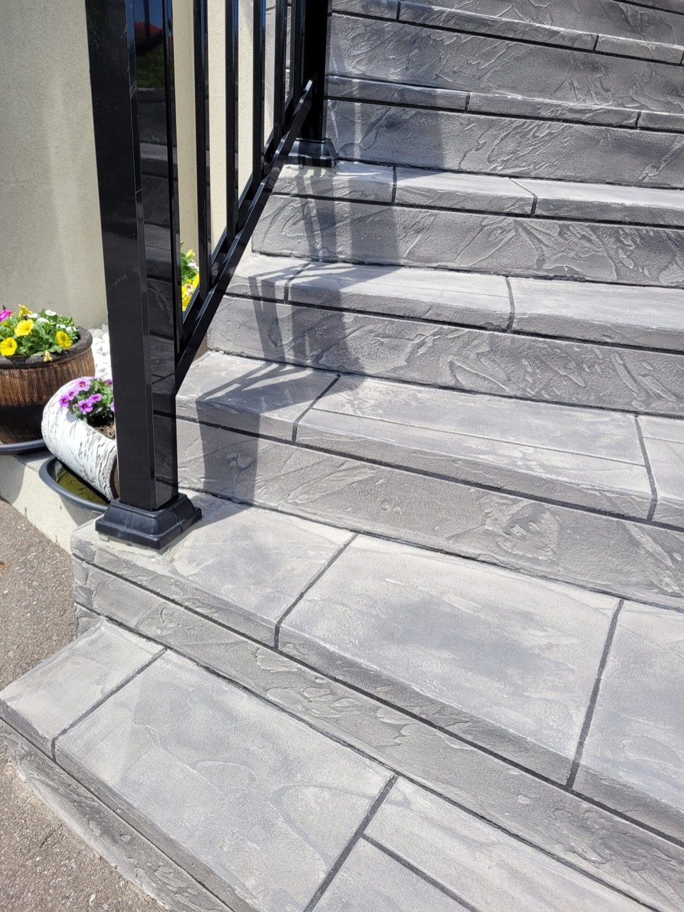

Repair cracks, restore structure, and transform your porch, stairs, or pool deck — without demolishing what's already there. New color. New design. Same concrete.
"Don't Replace Your Porch — Resurface It. Save the Bank."
Jewelstone is a polymer-modified concrete overlay — a professional-grade resurfacing system that bonds directly to your existing concrete. It's not paint. It's not a thin film. It's a structural coating system that repairs damage, rebuilds surfaces, and delivers a beautiful decorative finish.
The result looks like natural stone or tile — but it's applied over your existing porch, stairs, or pool deck without removing a single slab. No jackhammers. No dumpsters. No weeks of disruption.
Artisan Coat has been applying Jewelstone across the GTA for over 20 years. We know this material inside and out — how to prepare it properly, how to apply it precisely, and how to seal it so it lasts through everything a Canadian winter can throw at it.

We assess every surface honestly and recommend the right option — not the most expensive one.
For surfaces with isolated cracking or minor spalling that are otherwise structurally sound. We fill and patch the damaged areas and seal the surface.
Best for: Minor damage, tight budget
The most popular option. We repair all damage, then apply a full Jewelstone overlay with your choice of color and pattern. Complete transformation — same concrete.
Best for: Most porches, stairs, pool decks
Only recommended when the structural base is completely compromised or heaved beyond repair. This is always our last recommendation — not our first.
Only when: Structure is beyond saving
Not sure which option you need? Book a free estimate — we'll assess it honestly.
Every project below is a real transformation — same structure, completely new surface.

Before Severely cracked and peeling — Toronto
After Dark charcoal Jewelstone — new color, new design, no demo
Before Faded, worn stairs — needed full treatment
After Light gray stone-pattern Jewelstone — complete transformationThese are the most common problems GTA homeowners bring to us — all fixable without demolition.
Freeze-thaw cycles crack concrete from the inside out. We fill, stabilize, and resurface — stopping the damage before it spreads.
Old painted or stained concrete that looks tired and worn. We apply a fresh Jewelstone layer in any color you choose.
Standing water, efflorescence, or salt staining. We treat the cause and apply a sealed, waterproof finish.
A previous coating that's now peeling or bubbling. We strip, prepare, and apply a properly bonded system that lasts.
Step edges and corners that have broken away. We rebuild the structure before applying the new surface finish.
A front porch that looks old and tired brings down your whole home's appearance. We fix that in 1–2 days.
We visit, evaluate the surface condition, and provide a clear written quote — no pressure, no commitment.
We clean thoroughly, fill cracks, rebuild broken edges, and prime the surface for maximum coating adhesion.
Our craftsmen hand-apply the overlay layer by layer, then stamp it with your chosen pattern in your chosen color.
A protective sealer is applied for weather resistance and longevity. We clean up and walk you through the results.
When properly applied and sealed, Jewelstone typically lasts 10–15+ years. The key is proper surface preparation and using a quality sealer — both of which are standard in our process. We also back it with a 3-year warranty.
Yes — it's specifically formulated to be frost-resistant. Our coatings flex with temperature changes instead of cracking. Clients across the GTA have had our Jewelstone surfaces for years without freeze-thaw damage.
Absolutely. That's one of the biggest benefits of Jewelstone resurfacing. You can go from a faded tan to charcoal gray, from plain concrete to a stone-look tile pattern — completely different look, same structure underneath.
Most porch and stair resurfacing jobs take 1–3 days. Pool decks may take 2–4 days depending on size and shape. We give you a firm timeline with your estimate — and we stick to it.
In most cases, yes. Even significantly cracked, spalled, or peeling surfaces can be resurfaced if the structural base is sound. We'll assess it honestly during your free estimate — and if it truly needs replacement, we'll tell you that too.